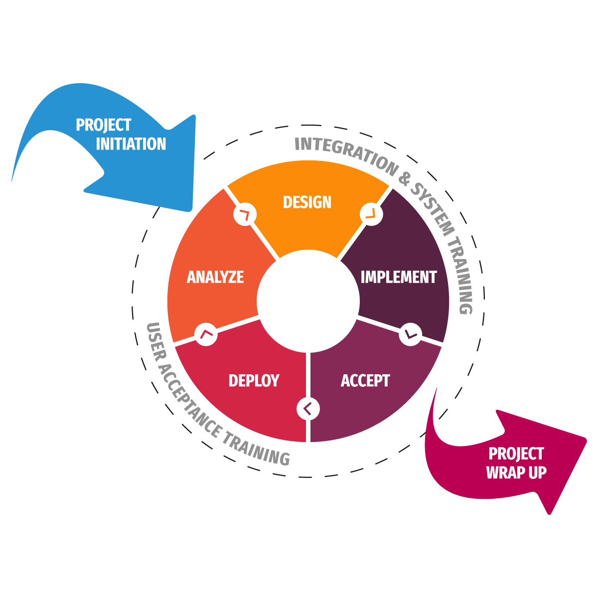

FirstQA Systems follows global delivery model to deliver managed services to our enterprise clients. We leverage our onsite teams in global locations with
offshore team members in India to deliver end to end solutions and services. Our projects adopt Waterfall or Agile software development methodology
based on project needs. Waterfall is an excellent methodology when business requirements are thoroughly and accurately defined. We’ve had great success
using this method to build large and complex applications for our enterprise clients. Agile software development has quickly proven its value in delivering
high-quality applications that our client needs. FirstQA’s Agile developers produce superior code that is easier to maintain, adapt and extend. Our agile
development practices, such as frequent deliveries, continuous integration, and build, deployment, and tests, reduce risk and rework
Majority of our digital transformation and blockchain projects follow agile model.

Application Management Service for Service Now/Salesforce
Today’s information technology landscape is more complex than ever, and the cost to maintain ServiceNow and Salesforce instance and applications
continues to climb. There is increasing end user demand and workloads, a greater number of applications, and more complex solution that need to be
supported. How do you do all of this with constrained or reducing IT budgets? We have an effective and better way. FirstQA Systems’ Application
Management Service (AMS) can help you overcome these challenges to improve ServiceNow and Salesforce development & maintenance and achieve
better business result at lower costs. We leverage a flexible onsite and offshore team structure that enables us to fine tune AMS to match to your IT and
business objectives. Service Level Agreement (SLA) enable you to measure and monitor for Schedule and Quality objectives. We have an AMS framework
through a well-defined method, custom-developed set of processes, policies, procedures, standards and templates.